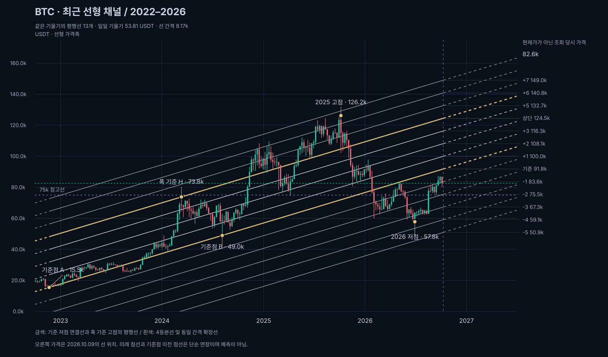
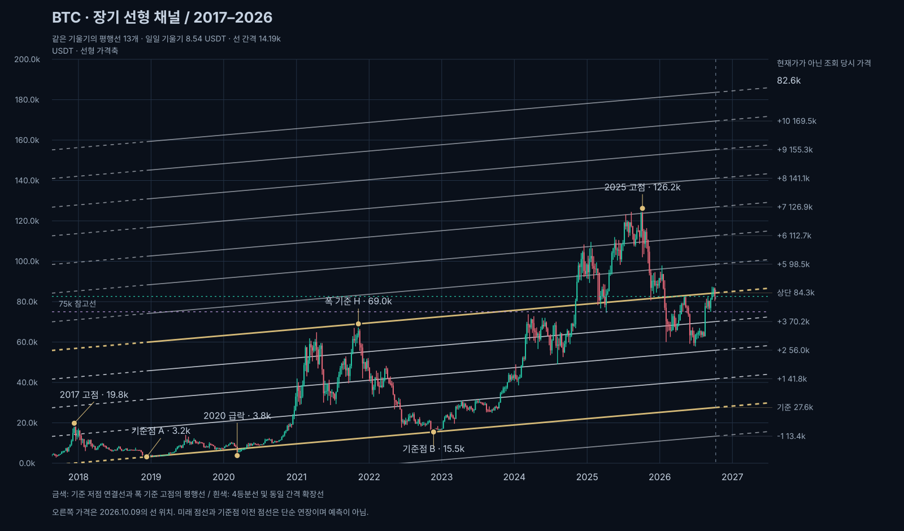

BTC · 선형 다중 평행 채널
로그 가격축 없음 · 2026.10.09 자료 · Binance BTC/USDT 주봉
저점 두 곳으로 빗각을 잡고, 고점을 지나는 평행선으로 채널 폭을 정했다. 각 채널을 4등분하고 같은 간격으로 확장해 13개의 선을 표시했다.
모바일에서는 차트를 좌우로 밀어 볼 수 있습니다. ‘전체 흐름 보기’로 전 구간을 보고, ‘확대해서 보기’로 세부 위치를 확인하세요.
최근 빗각 · 2022년 이후
A: 2022-11-21 주 저점 15.5k → B: 2024-08-05 주 저점 49.0k. H: 2024-03-11 주 고점 73.8k를 지나는 평행선으로 폭을 정하고 4등분했다.

75k는 별도 수평 기준선이다. 각 빗각의 가격은 시간이 지나면 올라가며, 고정 지지 가격이 아니다. 최근 차트 원본

장기 빗각 · 2017년 이후 관측 구간
A: 2018-12-10 주 저점 3.2k → B: 2022-11-21 주 저점 15.5k. H: 2021-11-08 주 고점 69.0k를 지나는 평행선으로 폭을 정하고 4등분했다.

최근 채널과 기울기가 다른 별도 채널이다. 선형 축에서는 초창기 움직임이 작게 보인다. 장기 차트 원본

주요 고점·저점과 선의 거리
‘기준점’은 선을 그리는 데 사용한 자리이므로 맞는 것이 당연하다. 나머지는 가장 가까운 표시선과의 가격 차이이며 독립 검증이나 반등 확률이 아니다. 날짜는 해당 주봉의 시작일이다.
| 구간 | 주봉 | 가격 | 가장 가까운 선 | 가격 차이 |
|---|---|---|---|---|
| 2017 고점 | 2017-12-11 주 | 19.8k | 장기 +1 | +5.6k |
| 2018 저점 | 2018-12-10 주 | 3.2k | 장기 기준 | 기준점 |
| 2020 급락 | 2020-03-09 주 | 3.8k | 장기 기준 | -3.3k |
| 2021 고점 | 2021-11-08 주 | 69.0k | 장기 +4 | 기준점 |
| 2022 저점 | 2022-11-21 주 | 15.5k | 최근 기준 | 기준점 |
| 2024 3월 고점 | 2024-03-11 주 | 73.8k | 최근 +4 | 기준점 |
| 2024 8월 저점 | 2024-08-05 주 | 49.0k | 최근 기준 | 기준점 |
| 2025 고점 | 2025-10-06 주 | 126.2k | 최근 +7 | -3.0k |
| 2026 저점 | 2026-06-29 주 | 57.8k | 최근 -3 | -4.0k |
해석 시 주의
- 기존 회귀·로그 채널을 이 페이지에서 제거했다. 두 차트 모두 선형 가격축이며 기준점은 사후적으로 선택했다.
- 선이 13개라고 신뢰도가 높아지는 것은 아니다. 보조선은 채널을 나눈 참고선으로, 자동 탐지·검증된 지지·저항이 아니다. 선 근처에 닿는 것은 우연일 수 있다.
- 주봉 기준점은 주중 고가·저가를 사용한다. 그 주의 시작일에 해당 가격이 거래됐다는 뜻은 아니다.
- 진행 주봉은 계산 기준점에서 제외했다. 오른쪽 가격은 10월 9일의 선 위치이며 이후 실시간으로 갱신되지 않는다.
- 미래 점선과 첫 기준점 이전 점선은 단순 연장이다. 매매 신호나 목표가가 아니다. 선을 크게 벗어난 움직임도 그대로 표시했다.
- 2010–2017년은 자료에 포함하지 않았다. 비트코인 전체 역사를 그렸다고 볼 수 없다.